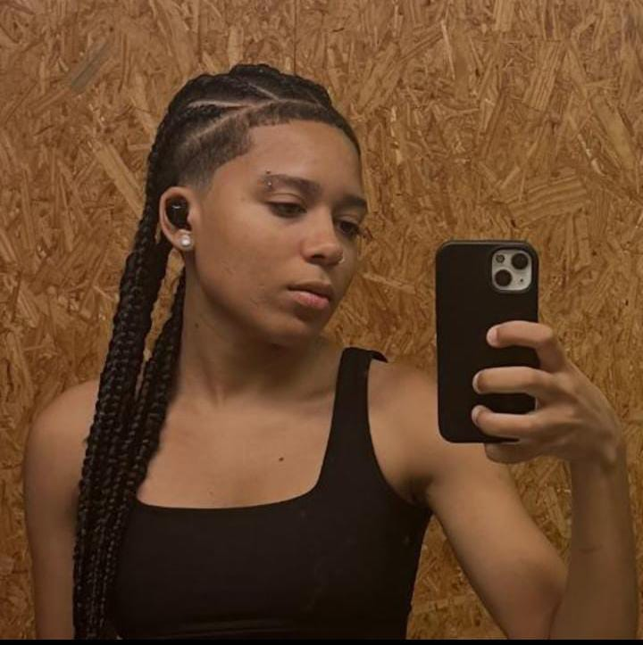

Ana Luiza Trindade
Estudante de Sistemas de Informação
Sou estudante de Sistemas de Informação, apaixonada por tecnologia, programação e desenvolvimento web. Desde cedo, descobri meu interesse pela área de TI e venho buscando crescer profissionalmente por meio de estudos, projetos práticos e experiências no ambiente corporativo.
Meu objetivo é atuar como Engenheira de Software, ajudar criando sites e sistemas modernos, funcionais, responsivos e com aparência profissional. Também tenho grande interesse em aprimorar continuamente meus conhecimentos em programação, banco de dados e interfaces web.

Minha História
Iniciei meu interesse por tecnologia ainda jovem, principalmente por meio de estudos em programação e robótica. Ao longo da minha trajetória, desenvolvi habilidades em HTML, CSS, JavaScript, Java e banco de dados. Tenho perfil proativo, aprendo rápido e gosto de transformar ideias em projetos reais.
Habilidades Pessoais
- Musculção
- Jogar futsal e futvolei
- Organização e responsabilidade
- Interesse em desenvolvimento web
- Noções de lógica de programação e banco de dados
- Comprometimento com resultados
Vida Pessoal
Hobbies: Programar, sair pra comer, ouvir música, assistir series e aprender inglês.
Esportes: Gosto bastante de musculação
Músicas e series Rock e Pop, series como Dexter, key house, e You
Time: Você pode editar essa parte com o seu time favorito.
Vida Acadêmica
Concluí o ensino médio integrado ao curso técnico em Informática para Internet. Atualmente curso Sistemas de Informação e busco construir uma carreira sólida na área de tecnologia.
Eventos e Participações
- Integrante ativa da Liga feminina de TI
- Multidalhista olimpica de olimpidas cientificas
- Torneios de Rotica e oficinas de hardware
- Intagrante da Atletica
Matérias da Faculdade
- Algoritmos: Construção para software web
- Banco de Dados: Design e Desenvolviemento de banco de dados |
- Desenvolvimento Web: Experiencia de interface do usuario
- Computação: fundamentos e tecnolgia da compuptacao
- Logica: Logica pra computacao
- Materia EAD: textos cientificos: aspectos metodologicos e linguisticos
Planos para o Futuro
Desejo trabalhar com desenvolvimento de software, ajudando a criar sites e sistemas Pretendo ganhar experiência profissional, ampliar meu portfólio e futuramente atuar como engenheira de software.